Every query is embedded and compared against every previously-cached entry before the LLM is ever considered. The diagram traces the similarity scan, the calibrated threshold decision, and what gets logged either way.

| Node | Location | What it does |
|---|---|---|
| EMPTYCACHE | semantic_cache.py:SemanticCache.lookup() | The very first query of a session always misses — there's nothing yet to compare against, so the scan is skipped entirely and the function returns None immediately. |
| SCANLOOP / COSINE | semantic_cache.py:SemanticCache.lookup() | A linear scan over every cached entry, computing cosine similarity against each one, tracking the single best match — appropriate at this project's demo scale (tens of entries), not what a production-scale cache would use. |
| THRESHCHECK | semantic_cache.py:SemanticCache.lookup() | threshold=0.75 — NOT a guessed number. The original guess of 0.92 was tested directly and produced zero cache hits; 0.75 was calibrated from measuring real cosine similarities between actual paraphrase pairs. |
| STORECACHE | cached_pipeline.py:CachedPipeline.query() | Runs on every cache MISS — the fresh response gets embedded and appended to _entries, making it available for future lookups. This is also what makes cache size grow unboundedly across a long session (a documented known limitation). |
No prior entries exist, so the lookup short-circuits to a miss without even computing an embedding for comparison.
LOOKUP → EMPTYCACHE(Yes) → RETURNNONE1 → MISSFLOW → CALLLLM → STORECACHE"When an instance fails its health check, what happens automatically?" scores 0.790 similarity against the cached "What happens when an EC2 receiver fails health checks?" — above the 0.75 threshold, so it hits.
LOOKUP → SCANLOOP → COSINE(0.790) → THRESHCHECK(>=0.75 → Yes) → HITPATH → LOGHIT(actual_cost=0.0)A more loosely related question scores 0.567 — below threshold, correctly treated as a genuinely different query rather than risking a wrong cached answer.
LOOKUP → SCANLOOP → COSINE(0.567) → THRESHCHECK(No) → RETURNNONE2 → MISSFLOW → CALLLLM